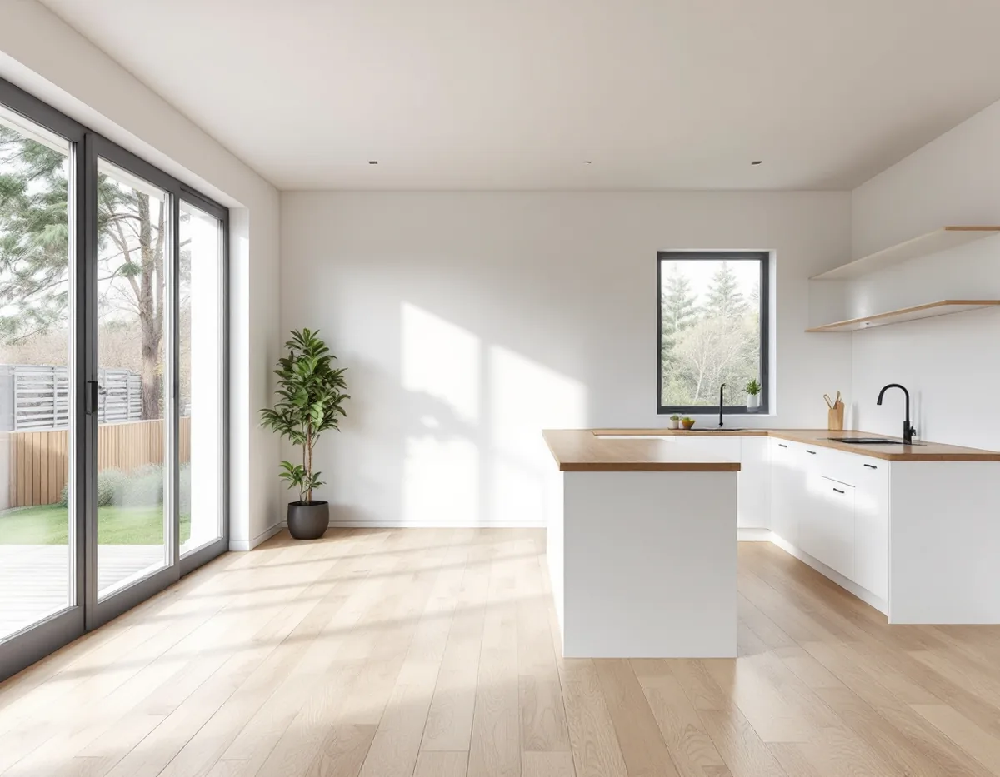
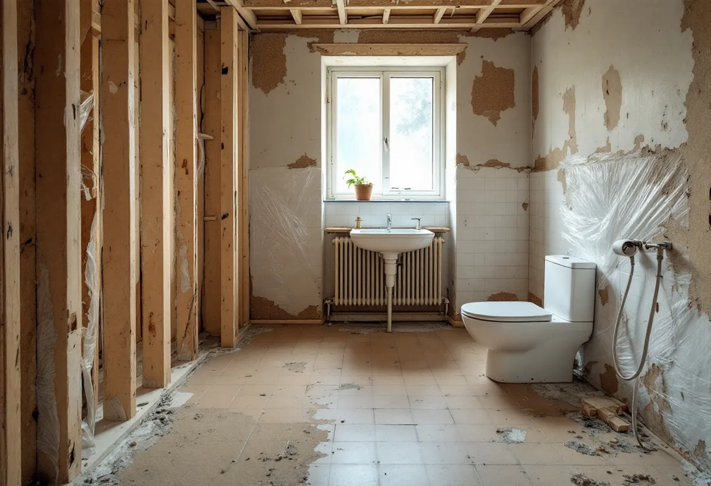

Platsbesök
Vi går igenom huset, tar reda på byggåret och vilka renoveringar som gjorts tidigare.
Ett grupphus eller radhus från rekordåren kan ha kök, badrum, el och ytskikt kvar från byggåret eller från en tidig renovering. När allt ska göras om på en gång är det husets ålder som styr vad som behöver undersökas innan något rivs. Geal Entreprenad AB tar totalrenoveringar i Huddinge som en total entreprenad med en kontakt för hela projektet.

Kommunens kulturmiljöprogram beskriver hur villor under 1960-talet i större omfattning började byggas som grupphusområden, helt uppförda av byggbolag. Konceptet att köpa ett nyckelfärdigt hus hade skapats, och husen byggdes oftast prefabricerat med färdiga byggelement som monterades ihop på plats. Inom miljonprogrammets ramar, 1965–1975, uppfördes en tredjedel av de nya bostäderna i småhus och grupphus, men i Huddinge blev andelen flerbostadshus större.
Som en motreaktion mot de stora flerbostadshusen byggdes radhus i slutet av 1970-talet och början av 1980-talet runt om i Huddinge, till exempel i Sörskogen söder om Huddinge centrum och i Utsälje vid Snättringe. Även Östra Skogås bebyggdes med terränganpassade småhus. 1970-talets villor beskrivs som större och av högre standard än egnahemsrörelsens enkla småhus.

Boverket skriver att det är sannolikt att det finns asbest någonstans i en byggnad som uppfördes under perioden 1940–1980. Rådet är att börja med husets byggår och tidigare renoveringar, och att leta i bygglovshandlingar och annan dokumentation. Det enda säkra sättet att veta är provtagning och analys.
Många av de material som Boverket listar är sådana som rivs i en totalrenovering: kakel- och klinkerfix och fog, socklar i badrum, golv- och väggmattor med lim och underliggande skikt, golvmassor, rörisolering, fönsterkitt, väggskivor inomhus, ventilationskanaler och fogmassor. Så länge asbesten sitter i bunden form är den ingen fara, men när materialet sågas, slipas, borras eller skrapas kan fibrer frigöras och sväva i luften i många timmar. Därför provtas misstänkta material innan rivningen börjar, och hittas asbest saneras den av ett företag med tillstånd från Arbetsmiljöverket.
PCB är en grupp giftiga och svårnedbrytbara ämnen som enligt Naturvårdsverket är förbjudna för nyanvändning sedan 1978. Reglerna om inventering gäller byggnader som byggts eller byggts om under åren 1956–1973, och vägledningen tar särskilt upp fog- och golvmassor som innehåller PCB.
Naturvårdsverket skriver samtidigt att en- och tvåbostadshus som ägs av fysiska personer inte berörs av reglerna. Äger du själv din villa eller ditt radhus är du alltså inte skyldig att inventera för PCB. Boverket påminner dock om att miljöbalkens allmänna hänsynsregler gäller även för privatpersoner: den som vidtar en åtgärd som kan påverka människors hälsa eller miljön är skyldig att skaffa sig tillräcklig kunskap och vidta de skyddsåtgärder som behövs.
Ska planlösningen i ett grupphus eller radhus öppnas upp är det kommunens regler om bärande konstruktion som gäller. Huddinge kommun skriver att det inte krävs bygglov för att bara ändra i den bärande konstruktionen, men att du behöver göra en anmälan och få ett startbesked om ändringen påverkar konstruktionen, till exempel om du flyttar eller tar upp öppningar i bärande väggar eller ändrar hur laster tas emot i tak och väggar. Är du osäker behöver du kontakta en konstruktör.
Kommunen påpekar också att ritningar i bygglovsarkivet inte säkert stämmer med det som byggdes, och att vissa krav ska uppfyllas även när ingen anmälan behövs, bland annat att entréplanet ska vara tillgängligt och att vissa rum ska ha dagsljus. Bor du i ett radhus som är bostadsrätt kan du behöva föreningens tillstånd. Om tomt, grannar och lovärendet finns mer under byggföretag i Huddinge, och om rummen var för sig under köksrenovering i Huddinge och badrumsrenovering i Huddinge.
Vi går igenom huset, tar reda på byggåret och vilka renoveringar som gjorts tidigare.
Misstänkta material provtas innan något rivs.
Eventuell sanering, rivning och ombyggnad redovisas som egna poster.
Ska bärande väggar öppnas tas underlag fram med konstruktör och anmälan görs.
Installationer, rum och ytskikt i tur och ordning – el och VVS via behöriga.
Vi går igenom huset med dig när allt är klart.
Skatteverket godkänner rotavdrag för att modernisera el och installera elcentraler, dra in och reparera vatten- och avloppsledningar, riva väggar och bygga om planlösningen och sanera asbest i samband med byggarbete. Att mäta fukt, radon eller asbest ger däremot inget avdrag.
Företaget får dra av högst 30 procent av arbetskostnaden på fakturan. Rotavdraget är högst 50 000 kr per person och år och högst 75 000 kr tillsammans med rutavdrag. Material och resor ger inget avdrag. Geal drar avdraget direkt på fakturan.
Om material behöver provtas eller saneras, om bärande väggar ska öppnas och hur mycket el, rör och ventilation som byts påverkar mest. Efter ett gratis platsbesök får du ett skriftligt kostnadsförslag.
Renovera hela huset eller lägenheten.
Villarenovering →Takbyte, takbesiktning och plåtarbeten.
Takläggare i Huddinge →Stuvsta, Snättringe och Skogås.
Takrenovering i Huddinge →Avlopp, egen brunn och ritningar.
Attefallshus i Huddinge →Grannar, tomtgräns och lovärendet.
Byggföretag i Huddinge →Nytt trä i en gammal fasad.
Fasadmålning i Huddinge →Egnahem, grupphus och 70-talsvillor.
Fönsterbyte i Huddinge →Okopplade bågar, tätning och lagning av bottenstycken.
Fönsterrenovering i Huddinge →Slipa golvet och byt ytbehandling.
Golvslipning i Huddinge →Grupphus, egnahem och stugor.
Köksrenovering i Huddinge →Rännor, dagvatten och brutna tak.
Plåtslagare i Huddinge →Tyngre tak, stugor och landsbygd.
Takbyte i Huddinge →Ny tapet på lagad spännpapp.
Tapetsering i Huddinge →Råd för tre epoker av småhus.
Tillbyggnad i Huddinge →Egnahem, grupphus och permanentade stugor.
Badrumsrenovering i Huddinge →Villor, grupphus och fritidshus i Huddinge.
Fasadrenovering i Huddinge →Grupphus, radhus och kedjehus i Huddinge.
Golvläggare i Huddinge →Fasad, fönster och rum i Huddinge.
Målare i Huddinge →Altaner, förråd och gäststugor.
Snickare i Huddinge →